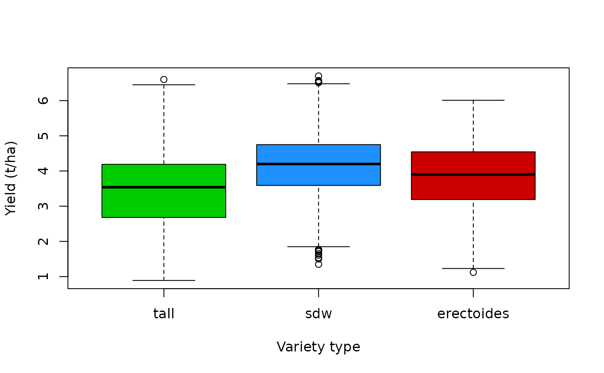

A simulated dataset inspired by the National Barley Agronomy project (GRDC UCS2301-002RTX), which studied genotype-by-environment-by-management (G x E x M) interactions in Australian barley. Contains grain yield, quality traits, and management variables from 20 simulated trials across three Australian states (2010–2016), designed to exhibit realistic agronomic response patterns matching Figures 5–7 of the GRDC Theme 4 report (Paynter, Moldovan, Graham, Khan, 2026).
Format
A data frame with 3240 rows and 18 variables:
- yield
Grain yield (t/ha). Range approximately 0.9–6.7.
- protein
Grain protein concentration (\ approximately 6–22.
- protein_yield
Protein yield (t/ha), computed as
yield * protein / 100.- hectolitre
Hectolitre weight (kg/hL, test weight). Range approximately 67–72. Relatively stable across treatments.
- screenings
Grain screenings (\ approximately 0.5–25.
- retention
Grain retention (\ approximately 60–95.
- avgrainwt
Average grain weight (mg per 1000 kernels). Range approximately 28–58.
- grains_m2
Estimated number of grains per square metre.
- nitrogen
Nitrogen fertiliser applied (kg/ha). Levels: 0, 20, 30, 80, 90, 150.
- seedrate
Sowing rate (plants/m\(^2\)). Levels: 75, 150, 300.
- rainfall
Growing-season rainfall, April–October (mm). Range approximately 90–610.
- sow_doy
Sowing day of year (integer). Range 130–170.
- variety
Barley variety name (factor). Levels:
"Bass","Buloke","Commander","Granger","La Trobe".- variety_type
Height gene classification (factor). Levels:
"tall","sdw"(semi-dwarf),"erectoides". Mapping: Bass and Granger aresdw; Buloke and Commander aretall; La Trobe iserectoides.- state
Australian state (factor). Levels:
"WA","VIC","NSW".- trial
Trial identifier (factor). Levels:
"T01"to"T20".- year
Trial year (integer). Range 2010–2016.
- rep
Replicate within trial-treatment combination (factor). Levels:
"1","2","3".
Source
Simulated data. Patterns are based on published results from Australian barley agronomy trials (GRDC Theme 4 report). No real experimental data are included.
Details
The data are generated with set.seed(42) for reproducibility.
Key agronomic patterns embedded in the simulation:
Yield: diminishing returns to nitrogen; strong positive rainfall effect (sigmoid); sowing date optimum ~DOY 148; erectoides most N-responsive; N x rainfall interaction.
Hectolitre: relatively stable (68–71 kg/hL); small variety effect; slight negative N effect.
Retention: sdw highest (~85\ (~72\
Screenings: roughly inverse of retention; erectoides highest; increases with N.
Protein: dilution effect (inversely related to yield); increases with N.
Examples
data(barley_trials)
str(barley_trials)
#> 'data.frame': 3240 obs. of 18 variables:
#> $ yield : num 3.37 3.75 3.72 4.08 3.93 3.48 4.06 3.89 3.86 4.23 ...
#> $ protein : num 13.9 13.4 13.1 13 13.5 13.9 12.3 13 13.2 12.9 ...
#> $ protein_yield: num 0.467 0.504 0.486 0.532 0.532 0.483 0.499 0.507 0.509 0.545 ...
#> $ hectolitre : num 70.4 69.9 70.9 69.7 70.7 70.2 69.8 70.4 70.1 70.4 ...
#> $ screenings : num 1.7 3.3 2.5 0.5 0.5 3.7 0.5 2.6 0.5 2.5 ...
#> $ retention : num 83.4 90.9 86.6 88.4 85.8 87.1 85.6 87.6 87.5 84.8 ...
#> $ avgrainwt : num 40.3 46.8 46.1 48 49.4 48.1 46.7 43.9 45.8 44.7 ...
#> $ grains_m2 : num 84876 80289 82118 85821 79825 ...
#> $ nitrogen : num 0 0 0 0 0 0 0 0 0 20 ...
#> $ seedrate : num 75 75 75 150 150 150 300 300 300 75 ...
#> $ rainfall : num 508 522 523 522 537 514 506 531 507 554 ...
#> $ sow_doy : int 163 163 161 162 161 162 163 160 161 162 ...
#> $ variety : Factor w/ 5 levels "Bass","Buloke",..: 1 1 1 1 1 1 1 1 1 1 ...
#> $ variety_type : Factor w/ 3 levels "tall","sdw","erectoides": 2 2 2 2 2 2 2 2 2 2 ...
#> $ state : Factor w/ 3 levels "WA","VIC","NSW": 1 1 1 1 1 1 1 1 1 1 ...
#> $ trial : Factor w/ 20 levels "T01","T02","T03",..: 1 1 1 1 1 1 1 1 1 1 ...
#> $ year : int 2010 2010 2010 2010 2010 2010 2010 2010 2010 2010 ...
#> $ rep : Factor w/ 3 levels "1","2","3": 1 2 3 1 2 3 1 2 3 1 ...
# Yield by variety type
boxplot(yield ~ variety_type, data = barley_trials,
col = c("green3", "dodgerblue", "red3"),
xlab = "Variety type", ylab = "Yield (t/ha)")
